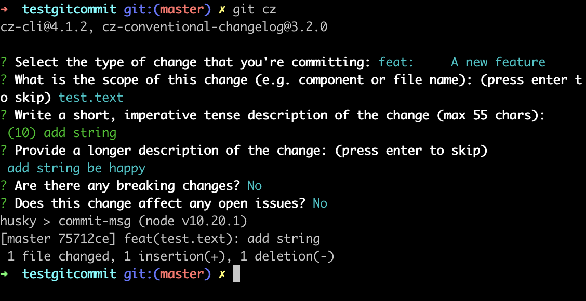
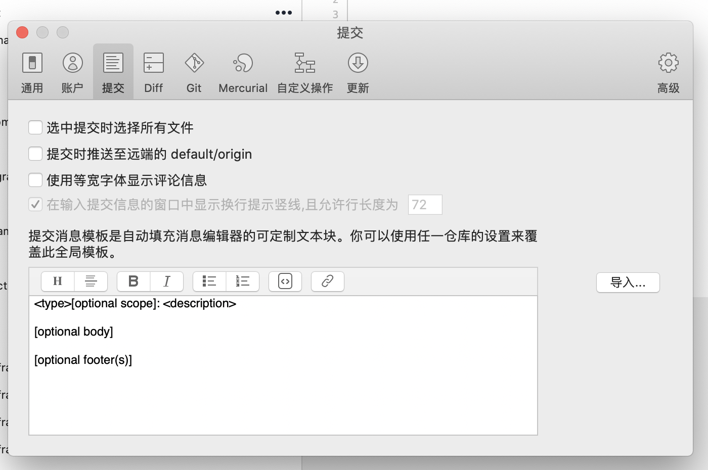
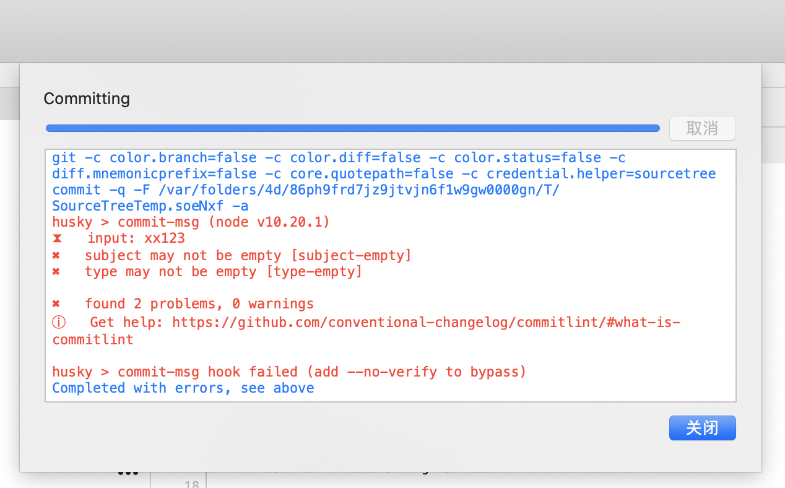
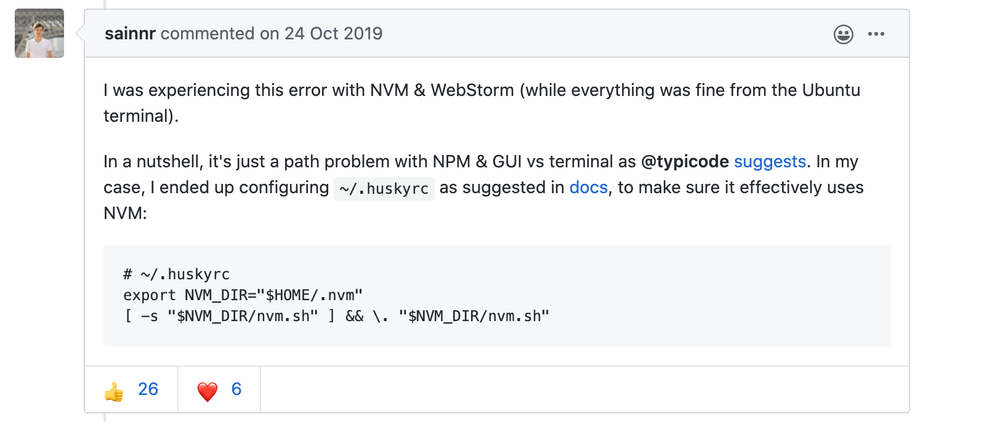

Git Commit Message规范
前言
提交规范选择
当一个项目有着频繁大量的git提交，如果提交信息能够规范起来，可以大大减少回溯问题的时间成本。规范的提交信息还可以用作CHANGELOG。
查询了一下大厂和开源项目的gitcommit提交规范，比较流行的是Conventional Commits规约。这套规约是在Angular convention的基础上进行改造和扩展，形成了一套简约轻量级的提交约束规范。
工具
既然有了规范，如果能有工具进行约定和限制就更好了。把约定俗称，变为开发规定。
进行约束git commit message的工具有很多，我们这里既然使用Conventional Commits，就去找了Conventional Commits相关的工具。下面是本文用到的工具列表
- commitizen ：用来规范化提交的git命令号工具，
- cz-conventional-changelog ：Conventional Commits规范，它和commitizen 配合使用，让commitizen 使用Conventional Commits规约来约束
- commitlint git hook的规则，提供Conventional Commits在git hook上的规则
- husky git hook小工具，它可以方便的应用一些hook规则
总结一下我们要用到的工具：
- 提交时编写符合规则的message工具：commitizen负责提供一个git提交命令行程序，它使用的规则由cz-conventional-changelog来提供。
- 提交后的检测工具：husky 用来简易的使用git hook，而真正的检测规则提供者是commitlint
git hook本质上提供了一套检测时机，可以在和git交互的过程中介入。我们用到的git hook就是commit-msg。常用的git hook还有pre-commit，在提交前检查提交的内容，可以静态检测提交代码来决定是否允许提交
规范简介
一个符合Conventional Commits规范的提交信息样板
|
|
- type：提交类型，冒号后面要有空格。简单的说有feat，fix，docs等等。具体可查看 @commitlint/config-conventional。注意，既然是规范，type类型是固定，一定要是规则里面有的。不要自己创造什么task，update，delete
- scope 影响返回
- description简单描述，相当于标题
- optional body可选的内容，提交的详细描述。注意，该选项和上面要有空行
- optional footer(s)可选的注脚，一般在进行重大修改，影响了别的模块的时候，一定要写。注意，该选项和上面要有空行
很简单吧？
举个例子（官网上的）
|
|
修复了一个bug的提交，它的bugid是133
type只允许以下几个
- feat：新功能（feature）
- fix：修补bug
- docs：文档（documentation）
- style： 格式（不影响代码运行的变动）
- refactor：重构（即不是新增功能，也不是修改bug的代码变动）
- test：增加测试
- chore：构建过程或辅助工具的变动
如果type是feat和fix，一定会进入你生成changelog。别的可以指定
开始吧
工具安装
因为这些工具，规范都是基于Conventional Commits规约，而Conventional Commits规约由是从Angular团队(一个基于js的web开发框架，google的。)发展而来，所以好多工具都是在node的基础上安装的，没有node的请自行安装。推荐使用nvm来管理node版本（不要用n）。
全局安装commitizen 和 cz-conventional-changelog
在终端里执行
|
|
解释一下：
- npm是node的命令
- 这里-g是指全局安装，本命令同时安装了两个模块，commitizen和cz-conventional-changelog
- echo ‘{ “path”: “cz-conventional-changelog” }’ > ~/.czrc是指往.czrc文件里写入一句配置，指定了commitizen使用的规则就是cz-conventional-changelog
现在可以试一下了，用git cz来代替git commit命令，你会发现git提交变成一个有交互引导的过程
|
|
输入git cz后，会让你选是一个什么类型的提交。这里我选定的是feat，一个新功能。一路回车
|
|

最后提交到git上的message就是这样的
|
|
类型是feat，范围是test.text，小标题是add string，主题内容是add string be happy
安装commitlint 和 husky
这两个工具是为了在git层面上限制提交的，所以我们要装在项目内，如果你想全局安装也可以。
安装前，这里有个需要注意的地方，不然会失败
因为这两个工具是node的工具，所以安装前项目根目录中要有package.json
可以使用npm初始化一个，也可以自己创建一个空的。
一切准备就绪，命令行执行
|
|
同样的，安装了三个model：husky，@commitlint/config-conventional，@commitlint/cli
配置1
安装完成后，调用命令行调用
|
|
在项目根目录创建一个文件commitlint.config.js，并写入配置
配置2
在安装成功后，package.json内容应该多了
|
|
我们再把husky的相关配置写入进去，平级添加
|
|
用commitlint，在hucky的配置下，添加到git hook上
调试使用
配置到这里应该就大功告成了，来试一下非法提交，命令行提交一条记录
|
|
可以看到，它提示了subject may not be empty [subject-empty]和type may not be empty [type-empty]。最后它还告诉你，如果想跳过git hook，可以添加–no-verify参数
使用提交信息生成changelog
conventional-changelog
工具安装
在命令行执行
|
|
生成文件
安装完毕后，执行
|
|
简化配置
因为是node项目配置，所以这里我们可以使用nodejs的配置来简化命令
在package.json中增加script节点，里面的每一个key value都是可以执行的命令
|
|
我们可以直接运行
|
|
这时你会发现，根目录多个changelog.md文件，内容是
|
|
发现问题了没？没有版本号
版本控制
简单说下npm的version
正常流程，生成changlog前需要升级版本号，而node项目升级版本号需要执行npm version xxx，
执行后node工具会自动把package.json中的version版本号给改掉，然后在git上打标签后自动提交。
以下是我指定版本号后的changelog，自动生成的tab就是v1.0.1
|
|
node项目版本号的更多内容，可以参考版本号管理策略&&使用npm管理项目版本号这篇文章。
当然我们自己有版本号控制，不需要npm多操心，这里可以多参考conventional-changelog –help命令帮助，看看怎么生成你心仪的changelog
Standard Version
这个工具也是Conventional Commits规约推荐的生成changelog和版本发布打tag的工具
想使用可以看下readme
IDE插件和模板设置
AndroidStudio
- Conventional Commit: provides extensible context and template-based completion, and inspections, for Conventional Commits inside the VCS Commit dialog. Available for all JetBrains IDEs.
- 这个界面和原VCS界面一样，只是在提交的时候，有联想关联提示
- Git Commit Template: Add Conventional Commits support to JetBrains Editors (IntelliJ IDEA, PyCharm, PhpStorm…).
- 这是直接有一个UI让你填入各种type，scope信息。
SourceTree
只能设置模板
我这里只是简单设置，如果规约熟悉了之后，可以不用设

Git 提交全局模板
先去~/.git/目录下创建一个模板文件commit.txt，内容随你
|
|
或者也可以修改.git目下的config
|
|
遇到的坑
package.json
package.json要提前创建好，再去安装commitlint 和 husky，不然配置写不进去，到时候一脸懵逼
node版本问题
因为husky要node版本>10，我本机的node版本是8.x，所以就用nvm安装了一个10.x的node，结果以前全局安装的npm工具模块都要重新安装。当重新使用npm安装arcanist （公司团队arcanist来进行codereview）的时候，发现版本过高，arc没有顺利安装成功，命令没法用了。
解决办法：其实arc已经安装成功了，只是npm里面一些函数再创建arc命令的软连接时失败了。这时，我们找到nvm的node版本的bin目录和arc模块的bin目录，重新手动把arc模块的命令shell软连接到node中就可以了
下面是我本机的目录
arc shell的具体路径
/Users/xxx/.nvm/versions/node/v10.20.1/lib/node_modules/arcanist/arcanist/bin/arc
node执行文件目录
/Users/xxx/.nvm/versions/node/v10.20.1/bin
把原先/Users/xxx/.nvm/versions/node/v10.20.1/bin中的arc删掉，然后执行
|
|
命令软连接过去就行了
SourceTree的非法提交没有被阻止
由于SourceTree会默认使用内置的git版本，而不使用你本机的。所以修改SourceTree的内置git版本，大于2.13.0就行了，我的是2.13.2
如果还是没阻止（hook没起作用），提交的时候打开【显示命令历史】，看下有没有什么错误。如果出现Skipping commit-msg hook的时候，需要在根目录创建一个husky的配置文件.huskyrc，内容填写
12export NVM_DIR="$HOME/.nvm"[ -s "$NVM_DIR/nvm.sh" ] && \. "$NVM_DIR/nvm.sh"再去试试应该就行了

下面是解决sourcetree问题搜到的issues
[issues390][https://github.com/typicode/husky/issues/390]
